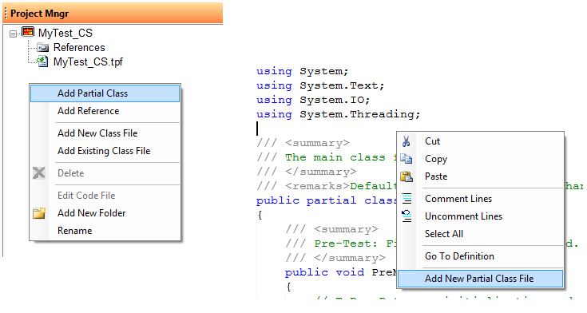
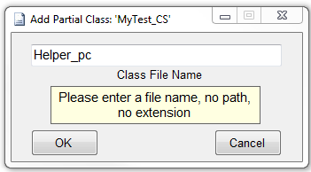
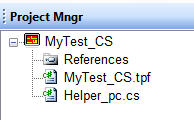
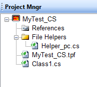

The Project Manager window is only valid on C# and .NET test programs. VBScript does not support a Project Manager. The primary purpose of the Project Manager is to manage additional test program files that are specific to your test program. Test program developers can add a partial class by right-mouse-clicking anywhere in a test program file or may add a partial class or new class by right-mouse-clicking in the Project Manager Window.

| Adding a partial
class will prompt the user with a "Add Partial Class" dialog box.
You cannot change the name of the partial class. This will be an
extension of the main test program's partial class file. However,
you will be prompted to supply a file name.
This new file will contain the partial class. To differentiate a partial class file from a new class file, developers might want to append a _pc to the file name. Note that no extension is necessary. All partial class files (for C#) will have the .CS extension. |
 |
|  | After pressing OK, the partial class file
is created and added to the project. To edit the new file,
double-click on the file in the Project Manager. All Functions and Objects in all previous partial class files will be available (with intellisense) to the new partial class file. However, as new objects are added to other files, developers will not see the intellisense until a program reload is performed. |
|  |
Folders may be added to the project manager to help organize large test programs. Note that folders are added only one-level deep. That is, folders cannot be added to folders. Use standard drag-drop to move files around into and out of the folders. Empty folders will be removed when the test program is closed. Only folders with files under them will be retained. Class files do not have access to anything in the main test program class. Test program objects - Drivers, Add-Ins, TraceLog, Results, etc. are only available to the main test program class objects (including all partial classes).
|
For class objects to gain access to the test program objects, it is necessary to pass the test program objects over to the new class so they can access them. For example, in our main test program, we might have some code that looks like:
Class1 c1 = new
Class1(DMM, TraceLog);
c1.myFn();
And in our new Class1 file (not a partial class), we would have:
// Must include the DMM object for this class to have
access to it.
using
Racal.DMM_4152;
///
<summary>
///
ToDo:
Class Description
///
</summary>
public
class
Class1
{
DMMDvr DMM;
Racal.Sequencer.TraceLog TraceLog;
public
Class1() {}
public
Class1(DMMDvr _dmm, Racal.Sequencer.TraceLog tLog)
{
DMM = _dmm;
TraceLog =
tLog;
}
public
void
myFn()
{
double
value = 0.0;
DMM.Read(ref
value);
}
}
see also:
Astronics Test Systems
Last updated on August 12, 2015 by D. Ignacio